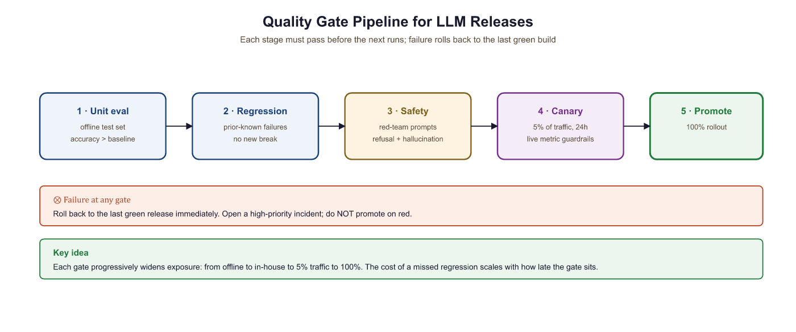

"A model that passes its evaluation suite today may fail it tomorrow. The gate must stay closed until the evidence says otherwise."
Eval AI Agent

Prerequisites
This section builds on evaluation fundamentals from Section 29.1, experimental design from Section 29.2, and LLM application testing from Section 29.4. Familiarity with prompt engineering and RAG pipelines provides helpful context for the examples.
Evaluation without enforcement is just reporting. The previous sections established how to measure LLM quality (Section 29.1), design rigorous experiments (Section 29.2), evaluate RAG and agent systems (Section 29.3), test LLM applications (Section 29.4), and set up observability (Section 29.5). This section closes the loop by turning evaluation metrics into enforceable quality gates: automated checkpoints that block deployment, prompt changes, or model updates unless predefined quality thresholds are met. Quality gates transform evaluation from a passive measurement activity into an active safety net.
1. Why Quality Gates Matter for LLM Systems Intermediate
Traditional software uses tests as deployment gates: if tests fail, the build does not ship. LLM systems need an analogous mechanism, but with a critical difference. LLM behavior is probabilistic, so a single failing test case is not always actionable. Instead, quality gates operate on aggregate metrics computed across evaluation suites, comparing current performance against established baselines with statistical thresholds.
Google's internal LLM deployment pipeline reportedly requires over 400 evaluation checks to pass before a model update reaches production. Most of these are automated quality gates that compare the new model against the previous version on curated test sets, and a single regression on a safety benchmark can block the entire release.
Quality gates serve three distinct purposes in LLM development:
- Deployment gates block a new model version or prompt change from reaching production unless it meets minimum quality thresholds.
- Regression gates detect when a change causes performance to drop below an acceptable margin compared to the current production baseline.
- Continuous gates run periodically against live production traffic to catch quality degradation that happens without any deployment (such as provider model updates or data drift, covered in Section 30.2).
2. Designing Evaluation Suites for Quality Gates Intermediate
A quality gate is only as strong as the evaluation suite behind it. The suite must balance coverage (testing enough scenarios to catch real problems) against speed (running fast enough to fit into the deployment pipeline). The key design principles are:
- Tiered evaluation: Fast, deterministic checks run first (format validation, safety keyword filters). Slower LLM-based evaluations run only if the fast checks pass.
- Golden test sets: A curated set of input/output pairs where the expected behavior is well-defined. These form the backbone of regression testing.
- Category-level tracking: Aggregate scores can hide regressions in specific categories. A model that improves on easy questions but regresses on hard ones may show a flat overall score. Track metrics per category.
- Baseline management: Store the evaluation results from the current production system as the baseline. Every candidate must beat or match this baseline.
Code Fragment 29.6.1 below implements a quality gate evaluator that enforces these principles.
# Define QualityGate; implement __init__, evaluate, check_gate
# Key operations: evaluation logic, threshold comparison
from dataclasses import dataclass, field
from typing import Optional
@dataclass
class GateResult:
"""Result of a quality gate evaluation."""
gate_name: str
passed: bool
overall_score: float
threshold: float
category_scores: dict[str, float] = field(default_factory=dict)
regressions: list[str] = field(default_factory=list)
details: str = ""
class QualityGate:
"""Automated quality gate for LLM deployment pipelines."""
def __init__(
self,
gate_name: str,
overall_threshold: float = 0.85,
category_thresholds: Optional[dict[str, float]] = None,
max_regression: float = 0.03,
):
self.gate_name = gate_name
self.overall_threshold = overall_threshold
self.category_thresholds = category_thresholds or {}
self.max_regression = max_regression
def check_gate(
self,
scores: dict[str, list[float]],
baseline_scores: Optional[dict[str, list[float]]] = None,
) -> GateResult:
"""Evaluate whether the candidate passes the quality gate.
Args:
scores: category_name -> list of scores for that category
baseline_scores: previous production scores for regression check
"""
# Compute category-level means
category_means = {
cat: sum(vals) / len(vals)
for cat, vals in scores.items() if vals
}
# Compute overall mean across all scores
all_scores = [s for vals in scores.values() for s in vals]
overall = sum(all_scores) / len(all_scores) if all_scores else 0.0
# Check for regressions against baseline
regressions = []
if baseline_scores:
for cat, vals in baseline_scores.items():
baseline_mean = sum(vals) / len(vals) if vals else 0.0
current_mean = category_means.get(cat, 0.0)
drop = baseline_mean - current_mean
if drop > self.max_regression:
regressions.append(
f"{cat}: dropped {drop:.3f} "
f"(baseline {baseline_mean:.3f} "
f"-> current {current_mean:.3f})"
)
# Check category-level thresholds
category_failures = []
for cat, threshold in self.category_thresholds.items():
if cat in category_means and category_means[cat] < threshold:
category_failures.append(
f"{cat}: {category_means[cat]:.3f} < {threshold}"
)
passed = (
overall >= self.overall_threshold
and len(regressions) == 0
and len(category_failures) == 0
)
details_parts = []
if regressions:
details_parts.append(
"Regressions: " + "; ".join(regressions)
)
if category_failures:
details_parts.append(
"Category failures: " + "; ".join(category_failures)
)
return GateResult(
gate_name=self.gate_name,
passed=passed,
overall_score=round(overall, 4),
threshold=self.overall_threshold,
category_scores={k: round(v, 4) for k, v in category_means.items()},
regressions=regressions,
details=" | ".join(details_parts) if details_parts else "All checks passed",
)
# Example: pre-deployment quality gate
gate = QualityGate(
gate_name="pre-deploy",
overall_threshold=0.85,
category_thresholds={"safety": 0.95, "factuality": 0.80},
max_regression=0.03,
)
candidate_scores = {
"safety": [1.0, 1.0, 0.95, 1.0, 0.90],
"factuality": [0.85, 0.90, 0.80, 0.88, 0.82],
"helpfulness": [0.78, 0.82, 0.85, 0.80, 0.76],
}
baseline_scores = {
"safety": [1.0, 1.0, 1.0, 0.95, 1.0],
"factuality": [0.82, 0.85, 0.80, 0.84, 0.81],
"helpfulness": [0.80, 0.83, 0.81, 0.79, 0.82],
}
result = gate.check_gate(candidate_scores, baseline_scores)
print(f"Gate: {result.gate_name}")
print(f"Passed: {result.passed}")
print(f"Overall score: {result.overall_score}")
print(f"Category scores: {result.category_scores}")
print(f"Details: {result.details}")Overall scores hide category-level regressions. A model that improves helpfulness by 5% but regresses safety by 2% may show a net improvement in the aggregate score. Quality gates must track metrics per category, with independent thresholds for critical dimensions like safety and factuality. The overall score serves as a secondary check; the category-level gates catch targeted regressions that aggregate metrics would miss.
3. Regression Testing for Prompt Changes Intermediate
Prompt changes are the most frequent source of quality regressions in LLM applications. A developer adds a new instruction to handle an edge case, and the change inadvertently degrades performance on previously working scenarios. Regression testing for prompts follows a specific pattern:
- Maintain a golden test set of representative inputs and expected outputs (or expected quality criteria).
- Before any prompt change, run the golden set against the current prompt to establish a baseline.
- Run the same golden set against the modified prompt.
- Compare results using the quality gate. Block the change if it causes a regression.
Code Fragment 29.6.2 shows how to implement prompt regression testing.
# Define PromptRegressionTest; implement __init__, run_test, compare
# Key operations: prompt construction, evaluation logic
from dataclasses import dataclass
@dataclass
class TestCase:
"""A single golden test case for prompt regression testing."""
input_text: str
expected_criteria: dict[str, str] # criterion_name -> description
category: str = "general"
@dataclass
class RegressionResult:
"""Comparison between baseline and candidate prompt performance."""
total_cases: int
improved: int
regressed: int
unchanged: int
regression_rate: float
details: list[dict]
class PromptRegressionTester:
"""Run regression tests when prompts change."""
def __init__(self, eval_fn, golden_tests: list[TestCase]):
"""
Args:
eval_fn: function(prompt, input_text) -> dict of scores
golden_tests: curated test cases with expected criteria
"""
self.eval_fn = eval_fn
self.golden_tests = golden_tests
def run_comparison(
self,
baseline_prompt: str,
candidate_prompt: str,
regression_threshold: float = 0.05,
) -> RegressionResult:
"""Compare candidate prompt against baseline on golden tests."""
details = []
improved = regressed = unchanged = 0
for test in self.golden_tests:
baseline_result = self.eval_fn(baseline_prompt, test.input_text)
candidate_result = self.eval_fn(candidate_prompt, test.input_text)
baseline_score = sum(baseline_result.values()) / len(baseline_result)
candidate_score = sum(candidate_result.values()) / len(candidate_result)
diff = candidate_score - baseline_score
if diff > regression_threshold:
improved += 1
status = "improved"
elif diff < -regression_threshold:
regressed += 1
status = "regressed"
else:
unchanged += 1
status = "unchanged"
details.append({
"input": test.input_text[:80],
"category": test.category,
"baseline_score": round(baseline_score, 3),
"candidate_score": round(candidate_score, 3),
"status": status,
})
total = len(self.golden_tests)
return RegressionResult(
total_cases=total,
improved=improved,
regressed=regressed,
unchanged=unchanged,
regression_rate=round(regressed / total, 3) if total > 0 else 0.0,
details=details,
)Golden test sets decay over time. As your application evolves, old test cases may become irrelevant, and new failure modes may go untested. Schedule quarterly reviews of your golden test set: remove outdated cases, add cases for recently discovered failure modes, and ensure the distribution of test categories reflects actual production traffic. A stale golden test set provides false confidence.
4. Continuous Evaluation Pipelines Intermediate
Quality gates at deployment time catch regressions caused by your own changes, but they cannot catch degradation caused by external factors: provider model updates, shifting user queries, or knowledge base staleness. Continuous evaluation pipelines address this gap by running evaluation suites against production traffic on a regular schedule (daily or hourly). For detailed coverage of monitoring and drift detection in production, see Section 30.2.
Code Fragment 29.6.3 shows a continuous evaluation scheduler that integrates with the quality gate framework.
# Define ContinuousEvalScheduler; implement __init__, run_evaluation_cycle
# Key operations: evaluation logic, scheduling, alerting
from dataclasses import dataclass, field
from datetime import datetime, timezone
from typing import Callable, Optional
@dataclass
class EvalCycleResult:
"""Result of a single continuous evaluation cycle."""
timestamp: str
gate_result: dict
samples_evaluated: int
alert_triggered: bool
alert_message: str = ""
class ContinuousEvalScheduler:
"""Schedule periodic evaluation of production LLM outputs."""
def __init__(
self,
sample_fn: Callable[[], list[dict]],
eval_fn: Callable[[dict], dict[str, float]],
gate: "QualityGate",
baseline_scores: Optional[dict[str, list[float]]] = None,
):
"""
Args:
sample_fn: returns recent production request/response pairs
eval_fn: scores a single request/response pair
gate: QualityGate instance for threshold checking
baseline_scores: production baseline for regression detection
"""
self.sample_fn = sample_fn
self.eval_fn = eval_fn
self.gate = gate
self.baseline_scores = baseline_scores
self.history: list[EvalCycleResult] = []
def run_evaluation_cycle(self) -> EvalCycleResult:
"""Run one evaluation cycle on sampled production traffic."""
samples = self.sample_fn()
if not samples:
return EvalCycleResult(
timestamp=datetime.now(timezone.utc).isoformat(),
gate_result={},
samples_evaluated=0,
alert_triggered=False,
alert_message="No samples available",
)
# Evaluate each sample and group scores by category
category_scores: dict[str, list[float]] = {}
for sample in samples:
scores = self.eval_fn(sample)
for category, score in scores.items():
category_scores.setdefault(category, []).append(score)
# Run through the quality gate
gate_result = self.gate.check_gate(
category_scores, self.baseline_scores
)
alert = not gate_result.passed
cycle = EvalCycleResult(
timestamp=datetime.now(timezone.utc).isoformat(),
gate_result={
"passed": gate_result.passed,
"overall_score": gate_result.overall_score,
"category_scores": gate_result.category_scores,
"regressions": gate_result.regressions,
},
samples_evaluated=len(samples),
alert_triggered=alert,
alert_message=gate_result.details if alert else "",
)
self.history.append(cycle)
return cycle
def get_trend(self, last_n: int = 7) -> list[float]:
"""Return recent overall scores for trend analysis."""
recent = self.history[-last_n:] if self.history else []
return [
h.gate_result.get("overall_score", 0.0)
for h in recent
if h.gate_result
]Quality Gate Strategies Comparison
| Gate Type | When It Runs | What It Checks | Action on Failure |
|---|---|---|---|
| Unit eval gate | Pre-commit (CI/CD) | Golden test cases, format compliance, safety | Block merge/deploy |
| Regression gate | Pre-deployment | Side-by-side comparison with production baseline | Block deployment, require review |
| Canary gate | Post-deployment (small traffic %) | Live metrics on canary traffic slice | Auto-rollback to previous version |
| Continuous gate | Periodic (daily or hourly) | Sampled production traffic against baseline | Alert team, initiate investigation |
| Safety gate | Every stage | Toxicity, bias, refusal rates, PII leakage | Hard block at any stage |
5. Integrating Quality Gates into CI/CD Intermediate
For quality gates to be effective, they must be automated and mandatory. The most reliable approach is to integrate them into your CI/CD pipeline so that prompt changes and model updates cannot bypass evaluation. The pattern mirrors traditional software testing: a pull request that modifies a prompt template automatically triggers the evaluation suite, and the merge is blocked unless all gates pass.
Treat prompts as code, not configuration. Store prompt templates in version control alongside the evaluation suite that validates them. When a developer modifies a prompt, the CI pipeline runs the golden test set against both the old and new versions, computes the quality gate result, and posts the comparison as a pull request comment. This makes prompt quality visible in the code review process and prevents ad-hoc edits from reaching production without evaluation.
A typical CI/CD integration involves three stages. First, a fast pre-commit gate (under 60 seconds) runs deterministic checks like format validation and safety keyword screening. Second, a slower regression gate (5 to 15 minutes) runs the full golden test set and compares against the baseline. Third, after deployment to a canary environment, a post-deploy gate monitors live metrics for a configurable observation window before promoting to full production.
Who: Engineering team at a financial services company building an AI-powered customer support chatbot
Situation: A developer added a new instruction to the system prompt to improve handling of wire transfer inquiries. The change looked reasonable in code review and improved the targeted scenario.
Problem: The new instruction conflicted with an existing instruction about account balance queries, causing the model to occasionally refuse to answer balance questions. Without automated regression testing, this would have reached production.
Dilemma: Manual testing of every prompt change was too slow (the team made 3 to 5 prompt changes per week). But deploying without testing was risky because prompt interactions are unpredictable.
Decision: The team implemented a three-tier quality gate pipeline integrated into their GitHub Actions workflow.
How: The golden test set included 150 cases across 12 categories (account balance, transfers, loans, complaints, etc.). The pre-commit gate ran format and safety checks in 30 seconds. The regression gate ran the full suite in 8 minutes, comparing per-category scores against the production baseline. The developer's PR was automatically flagged because the "account_balance" category dropped from 0.92 to 0.78, exceeding the 3% regression threshold.
Result: The developer revised the prompt to avoid the conflict, and the updated version passed all gates. Over six months, the quality gate caught 14 regressions that would have reached production, with zero false positives after the team calibrated their thresholds.
Lesson: Automated quality gates catch prompt regressions that code review cannot; the investment in building a golden test set pays for itself within the first month of use.
📝 Knowledge Check
Show Answer
Show Answer
Show Answer
Show Answer
Show Answer
Key Takeaways
- Evaluation without enforcement is just reporting. Quality gates transform evaluation metrics into automated deployment controls that block regressions before they reach users.
- Use tiered gates. Fast deterministic checks run first (format, safety), followed by slower statistical evaluations (regression comparison, LLM-based scoring). Each tier filters candidates progressively.
- Track quality per category, not just overall. Aggregate scores hide category-level regressions. Critical categories like safety and factuality need independent thresholds.
- Integrate gates into CI/CD. Treat prompts as code in version control, and require automated evaluation to pass before merging or deploying prompt changes.
- Combine deployment gates with continuous gates. Deployment gates catch your own regressions; continuous gates catch external degradation from provider updates and data drift.
Open Questions in Evaluation-Driven Quality Gates (2024-2026):
- Adaptive thresholds: Static thresholds require manual calibration and may not suit systems with evolving performance baselines. Research into dynamic threshold adjustment based on historical variance and business impact is ongoing.
- Efficient evaluation: Running large evaluation suites is expensive and slow. Techniques like evaluation distillation (training small, fast models to approximate expensive LLM judges) and stratified sampling could reduce evaluation cost by 10x or more while preserving statistical power.
- Multi-objective gates: Real systems must balance quality, latency, and cost simultaneously. Pareto-optimal evaluation gates that consider multiple objectives jointly, rather than independently, remain an active area of work.
Explore Further: Implement a quality gate pipeline for a prompt-driven application and measure how many regressions it catches over one month compared to manual review alone.
Exercises
Design a golden test set of 20 test cases for a customer support chatbot that handles billing, technical support, and account management. Specify the categories, the mix of easy and hard cases, and the evaluation criteria for each.
Answer Sketch
Distribute cases across categories: 7 billing, 7 technical support, 6 account management. Within each category, include 60% standard queries and 40% edge cases (ambiguous requests, multi-topic queries, adversarial inputs). Evaluation criteria: correctness (does the response answer the question?), safety (does it avoid leaking PII or making unauthorized promises?), tone (is it professional and empathetic?), and completeness (does it cover all parts of a multi-part question?). Score each criterion on a 0 to 1 scale.
Extend the QualityGate class from Code Fragment 29.6.1 to support a "warning" state in addition to pass/fail. The gate should return "warning" when the overall score is within 5% of the threshold, allowing the team to be proactive about approaching regressions.
Answer Sketch
Add a warning_margin parameter (default 0.05). In check_gate, after computing the overall score, check: if score >= threshold, status = "passed"; if score >= threshold - warning_margin, status = "warning"; otherwise status = "failed". Return the status in the GateResult. The CI pipeline can post a warning comment on the PR without blocking the merge, giving the team early visibility into quality trends.
You set a quality gate threshold of 0.90, but the gate blocks 40% of deployments, most of which are false positives. How would you calibrate the threshold to reduce false positives while still catching real regressions?
Answer Sketch
Step 1: Collect historical evaluation scores for deployments that were manually approved (the blocked ones that turned out to be fine). Step 2: Compute the distribution of scores for "good" deployments. Step 3: Set the threshold at the 5th percentile of this distribution, so only truly unusual scores trigger a block. Step 4: Supplement the hard threshold with a regression check (comparing against the previous deployment's scores) which is less prone to false positives than an absolute threshold. Step 5: Introduce category-specific thresholds since some categories naturally have lower scores.
Design a GitHub Actions workflow that runs quality gates on every pull request that modifies prompt templates. Specify the trigger conditions, the evaluation steps, and how results are reported back to the developer.
Answer Sketch
Trigger: on pull_request when files matching prompts/** are modified. Steps: (1) checkout code, (2) install dependencies, (3) run format validation gate (fast, deterministic), (4) if format passes, run regression gate with the golden test set against both the base branch prompt and the PR branch prompt, (5) post a PR comment with a comparison table showing per-category scores, regressions highlighted in red, improvements in green. Block merge if any category regresses more than 3% or if overall score drops below threshold. Store evaluation results as CI artifacts for audit.
Design a continuous evaluation pipeline that samples 2% of production traffic, evaluates it with an LLM judge, and triggers an alert if quality drops. Calculate the cost and latency implications, and explain how you would handle the cold-start problem (no baseline on day one).
Answer Sketch
At 10,000 daily requests, 2% sampling yields 200 evaluations per day. Using GPT-4o-mini as the judge at approximately $0.15 per 1M input tokens, the daily cost is roughly $0.50 to $2.00 depending on response length. Evaluations run asynchronously (no user-facing latency impact). Cold-start: during the first week, collect evaluation scores without alerting to establish the baseline. Set the baseline as the mean and standard deviation of this initial period. Alert when the daily mean drops below the baseline mean minus 2 standard deviations. Refine thresholds monthly based on false positive and false negative rates.
What Comes Next
In the next section, Section 29.7: LLM Experiment Reproducibility, we address experiment reproducibility, the practices that make LLM research and development results trustworthy and repeatable.